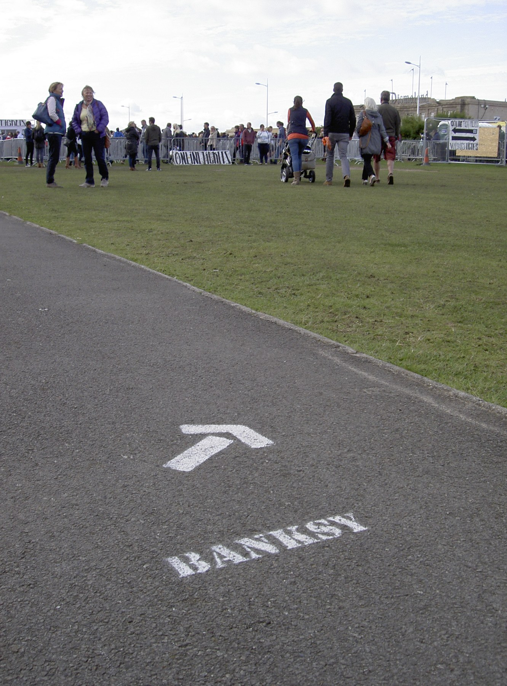
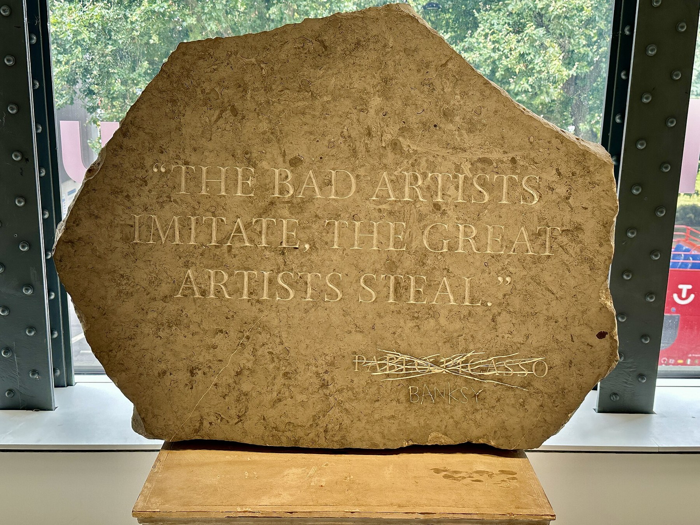

Dys version · Lesson 2 of 6
Lesson 2. Should the public know who Banksy is?
Activités langagières. Réception écrite, médiation (paraphrase a claim accurately), production écrite, interaction orale, production orale en continu.
The question today. When is it right to publish a name, and when is it better to wait?
A public name, without a face
Look first at two images. On a path, the word BANKSY points visitors towards a park. On a museum stone, a famous sentence is carved, Picasso's name is crossed out, and the name Banksy is carved below. The public already meets a name. That name is not a confirmed civil identity.


Exercise. Complete: The path says... People follow... The stone says... I think the public name is / is not enough, because...
Corrigé
Example. The path says BANKSY. People follow a word, not a face. The stone says that great artists steal, and it puts the name Banksy under a crossed-out name. The public name is already a kind of author. A civil name is a different question. A museum display is not a confirmation.
The sentence you must remember
Reuters reported in March 2026 that Banksy was born Robin Gunningham and later took the name David Jones. Banksy did not confirm that identification in the sources examined for this sequence.
Copy this sentence into your exercise book. It is the accurate form. Do not write: "Banksy's real name is Robin Gunningham."
Four categories
| Category | Meaning | Example |
|---|---|---|
| Documented fact | We can show the event or the publication | Reuters published its investigation on 13 March 2026. |
| Attributed claim | A named source says this | According to Reuters, Banksy was born Robin Gunningham. |
| Rumour | A story with no adequate source | Someone on the internet says a stranger is Banksy, with no evidence. |
| Interpretation | Your judgement | Anonymity makes the work more powerful. |
Worked example. "Reuters published a report in March 2026." This is a documented fact. "According to Reuters, the artist later used the name David Jones." This is an attributed claim. A claim can be serious. It is still a claim until it is confirmed.
Exercise 1. Write F, C, R or I.
- Reuters published an investigation on 13 March 2026.
- Banksy's real name is Robin Gunningham.
- According to Reuters, Banksy later used the name David Jones.
- A classmate says, with no source, that a neighbour is Banksy.
Corrigé
1 F. 2 This sentence is not acceptable. The correct form is a C: According to Reuters, Banksy was born Robin Gunningham. 3 C. 4 R.
Expanding your vocabulary
| Word or phrase | Meaning | Example |
|---|---|---|
| according to | used to give the source | According to Reuters, the artist used another name. |
| to report | to give information as news | Reuters reported that it had used documents. |
| to confirm | to say officially that something is true | Banksy did not confirm the name. |
| to deny | to say that something is not true | Did not confirm is not the same as denied. |
Worked example. A bad headline: BANKSY'S REAL NAME REVEALED. A better headline: According to Reuters, Banksy was born Robin Gunningham.
Exercise 2. Rewrite: PEST CONTROL CONFIRMS THE STORY.
Corrigé
Pest Control said the artist had decided not to comment. (That is not a confirmation.)
Speak
20 to 30 seconds. Use this frame:
I think the public should / should not know, because... According to Reuters... Banksy did not confirm...
Homework
Learn the classroom sentence. Record yourself reading it, or read it aloud three times. Make a flashcard for according to.